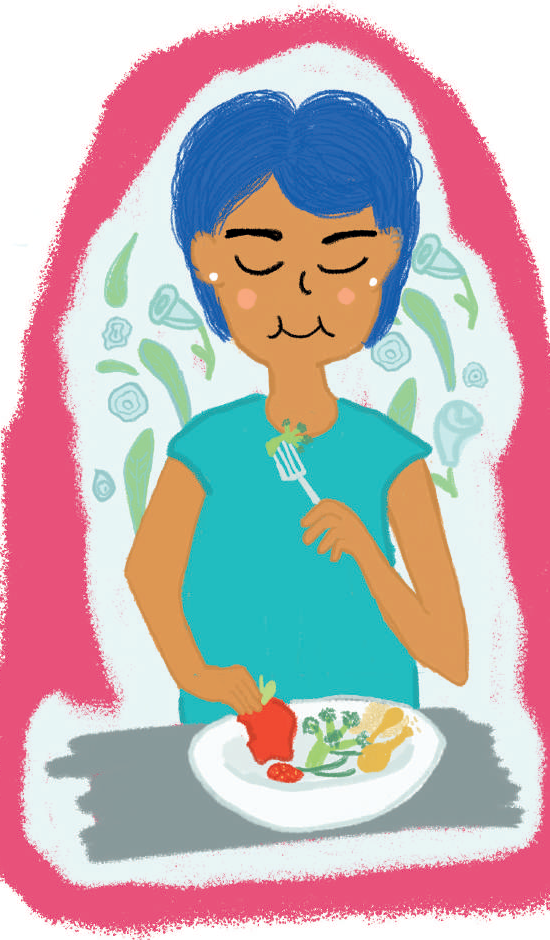

Tener una dieta saludable
Dentro de estas se pueden mencionar las siguientes prácticas:
Alimentarnos es una de las principales necesidades biológicas, es darle a nuestro cuerpo los suficientes nutrientes para subsistir y desarrollarse...

Dentro de estas se pueden mencionar las siguientes prácticas:
Alimentarnos es una de las principales necesidades biológicas, es darle a nuestro cuerpo los suficientes nutrientes para subsistir y desarrollarse...